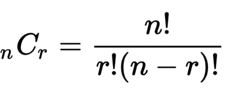

KOMBINASI
Dalam Matematika, Kombinasi sendiri adalah teknik yang digunakan untuk menyusun suatu kelompok atau grup yang terdiri atas kumpulan sejumlah objek tanpa perlu memperhatikan urutannya, singkatnya kombinasi adalah kumpulan dari seluruh objek maupun sebagian objek yang menjadi satu. Proses kombinasi sendiri adalah pemilihan objek atau item dari satu set maupun kumpulan objek, sehingga perhitungannya tidak menyerupai permutasi yang mempermasalahkan urutan pemilihan objek. Rumus kombinasi sendiri menganggap sama sebuah objek jika urutannya yang berbeda.
1. Pengulangan yang diperbolehkan :
Dalam satu wadah terdapat 3 bola merah dan 3 bola biru, kemudian kamu berhasil mengambil 3 bola dari wadah tersebut yang terdiri dari 2 bola merah dan 1 bola biru.
2. Pengulangan yang tidak diperbolehkan :
Kamu memilih 2 orang dari kelompok yang beranggotakan 5 orang. Tentu tidak mungkin jika orang pertama dan orang kedua adalah satu orang yang sama.
RUMUS
n = banyaknya unsur yang tersedia.
r = banyaknya unsur yang disusun.
CONTOH 1
Dalam sebuah tim olahraga terdapat 8 pemain. Jika pelatih ingin memilih 3 pemain untuk menjadi kapten, wakil kapten, dan sekretaris tanpa memperhatikan urutan posisi mereka, berapa banyak cara yang bisa dilakukan?
Diketahui
n = 8
r = 3
Ditanya: 8C3
8C3 = 8! / (3! (8-3)!)
= 8! / (3! × 5!)
= (8 × 7 × 6 × 5!) / (3 × 2 × 1 × 5!)
= (8 × 7 × 6) / 6
= 336 / 6
= 56
Jadi, ada 56 cara untuk memilih tim olahraga
CONTOH 2
Sebuah tim beranggotakan 10 orang ingin memilih 4 orang untuk mewakili mereka dalam sebuah kompetisi. Berapa banyak cara untuk memilih 4 orang tersebut?
Diketahui
n = 10
r = 4
Ditanya: 10C4
10C4 = 10! / (4! (10-4)!)
= 10! / (4! × 6!)
= (10 × 9 × 8 × 7 × 6!) / (4 × 3 × 2 × 1 × 6!)
= (10 × 9 × 8 × 7) / 24
= 5040 / 24
= 210
Jadi, ada 210 cara untuk memilih tim untuk mewakili sebuah kompetisi
KASUS
Ingin membentuk sebuah tim kerja kelompok yang berisikan 4 anggota orang dari keseluruhan anggota yang berisikan 10 orang, maka berapa banyak cara memilih anggota tim kerja tersebut?
Diketahui : pengambilan 4 anggota dari 10 orang anggota, maka:
n = 10
r = 4
Jawab :
10C4 = (10.9.8.7) / (4.3.2.1)
= 210 cara
Jadi, jawabannya adalah sebanyak 210 cara yang dapat dilakukan.